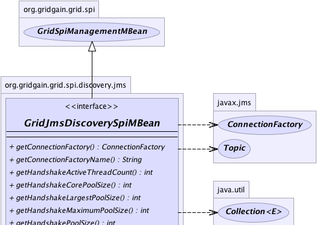
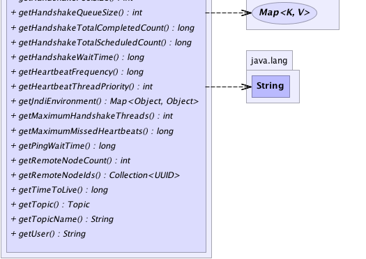

|
|

|
|

|

|

|
GridGain™ 3.1.1c
Community Edition |
|||||||||
| PREV CLASS NEXT CLASS | FRAMES NO FRAMES | |||||||||
| SUMMARY: NESTED | FIELD | CONSTR | METHOD | DETAIL: FIELD | CONSTR | METHOD | |||||||||
@GridMBeanDescription(value="MBean that provides access to JMS-based discovery SPI configuration.") public interface GridJmsDiscoverySpiMBean
Management bean for GridJmsDiscoverySpi.
| Wiki | |
| Forum |
|  |
|  |
| Method Summary | |
|---|---|
javax.jms.ConnectionFactory |
getConnectionFactory()
Returns JMS connection factory. |
String |
getConnectionFactoryName()
Returns name of the JMS connection factory in JNDI tree that is used for establishing connections by discovery SPI. |
int |
getHandshakeActiveThreadCount()
Returns the approximate number of threads that are actively processing handshake tasks. |
int |
getHandshakeCorePoolSize()
Returns the core number of handshake threads. |
int |
getHandshakeLargestPoolSize()
Returns the largest number of handshake threads that have ever simultaneously been in the pool. |
int |
getHandshakeMaximumPoolSize()
Returns the maximum allowed number of handshake threads. |
int |
getHandshakePoolSize()
Returns the current number of handshake threads in the pool. |
int |
getHandshakeQueueSize()
Gets current size of the handshake queue size. |
long |
getHandshakeTotalCompletedCount()
Returns the approximate total number of handshakes that have completed execution. |
long |
getHandshakeTotalScheduledCount()
Returns the approximate total number of handshake tasks that have been scheduled for execution. |
long |
getHandshakeWaitTime()
Returns timeout value for attributes handshake. |
long |
getHeartbeatFrequency()
Returns interval for heartbeat messages. |
int |
getHeartbeatThreadPriority()
Gets heartbeat thread priority. |
Map<Object,Object> |
getJndiEnvironment()
Returns naming context variables which are used by node to establish JNDI tree connection. |
int |
getMaximumHandshakeThreads()
Returns maximum number of handshake threads. |
long |
getMaximumMissedHeartbeats()
Returns numbers of heartbeat messages that could be missed before node is considered to be failed. |
long |
getPingWaitTime()
Returns timeout value for ping request. |
int |
getRemoteNodeCount()
Returns number of remote nodes. |
Collection<UUID> |
getRemoteNodeIds()
Returns set of discovered remote nodes IDs. |
long |
getTimeToLive()
Returns JMS time to live value for messages. |
javax.jms.Topic |
getTopic()
Returns JMS topic for broadcasting messages to all discovered nodes. |
String |
getTopicName()
Returns JMS topic name for broadcasting messages to all discovered nodes. |
String |
getUser()
Returns username to connect to JNDI. |
| Methods inherited from interface org.gridgain.grid.spi.GridSpiManagementMBean |
|---|
getAuthor, getGridGainHome, getLocalNodeId, getName, getStartTimestamp, getStartTimestampFormatted, getUpTime, getUpTimeFormatted, getVendorEmail, getVendorUrl, getVersion |
| Method Detail |
|---|
@GridMBeanDescription(value="Set of remote nodes IDs.") Collection<UUID> getRemoteNodeIds()
@GridMBeanDescription(value="Number of remote nodes.") int getRemoteNodeCount()
@GridMBeanDescription(value="Username to connect to JNDI.") String getUser()
null is returned.@GridMBeanDescription(value="Interval in milliseconds for heartbeat messages.") long getHeartbeatFrequency()
@GridMBeanDescription(value="Heartbeat thread priority.") int getHeartbeatThreadPriority()
@GridMBeanDescription(value="Numbers of heartbeat messages that could be missed before node is considered to be failed.") long getMaximumMissedHeartbeats()
@GridMBeanDescription(value="JMS time to live value for messages in milliseconds.") long getTimeToLive()
@GridMBeanDescription(value="Timeout value for ping request in milliseconds.") long getPingWaitTime()
@GridMBeanDescription(value="Timeout value for attributes handshake in milliseconds.") long getHandshakeWaitTime()
@GridMBeanDescription(value="Maximum number of handshake threads.") int getMaximumHandshakeThreads()
Note that if you expect a lot of nodes discovered each other in parallel you should better set higher value. After discovery number of unused threads will be shrank to 1. Typically two nodes that discover each other require one thread.
@GridMBeanDescription(value="Approximate number of threads that are actively processing handshake tasks.") int getHandshakeActiveThreadCount()
@GridMBeanDescription(value="Approximate total number of handshakes that have completed execution.") long getHandshakeTotalCompletedCount()
@GridMBeanDescription(value="Current size of the handshake queue size.") int getHandshakeQueueSize()
@GridMBeanDescription(value="Core number of handshake threads.") int getHandshakeCorePoolSize()
@GridMBeanDescription(value="Largest number of handshake threads that have ever simultaneously been in the pool.") int getHandshakeLargestPoolSize()
@GridMBeanDescription(value="Maximum allowed number of handshake threads.") int getHandshakeMaximumPoolSize()
@GridMBeanDescription(value="Current number of handshake threads in the pool.") int getHandshakePoolSize()
@GridMBeanDescription(value="Approximate total number of handshake tasks that have been scheduled for execution.") long getHandshakeTotalScheduledCount()
@GridMBeanDescription(value="Map of JNDI environment variables.") Map<Object,Object> getJndiEnvironment()
Context@GridMBeanDescription(value="Name of the JMS connection factory in JNDI tree.") String getConnectionFactoryName()
null is returned.@GridMBeanDescription(value="JMS connection factory.") javax.jms.ConnectionFactory getConnectionFactory()
@GridMBeanDescription(value="Name of the topic in JNDI tree.") String getTopicName()
@GridMBeanDescription(value="JMS topic for broadcasting messages to all discovered nodes.") javax.jms.Topic getTopic()
|
GridGain™ 3.1.1c
Community Edition |
|||||||||
| PREV CLASS NEXT CLASS | FRAMES NO FRAMES | |||||||||
| SUMMARY: NESTED | FIELD | CONSTR | METHOD | DETAIL: FIELD | CONSTR | METHOD | |||||||||
|
GridGain = High Performance Cloud Computing
|
|
|
|